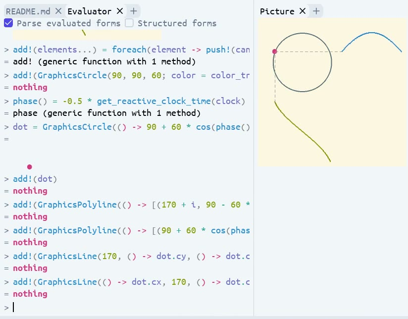
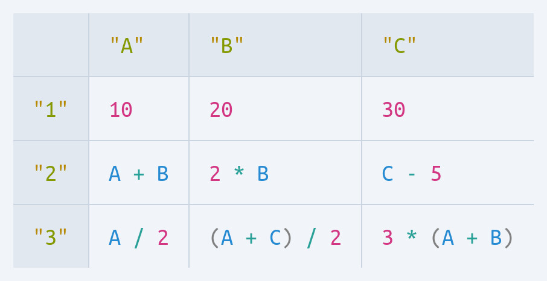
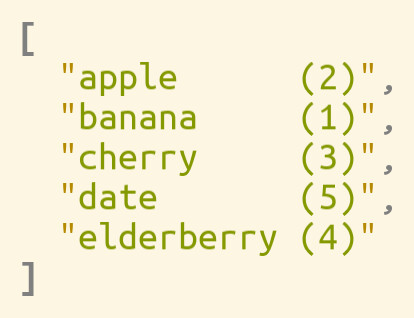
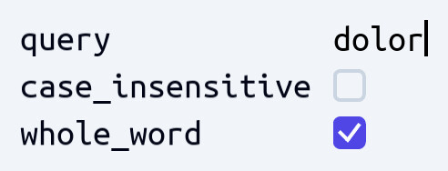
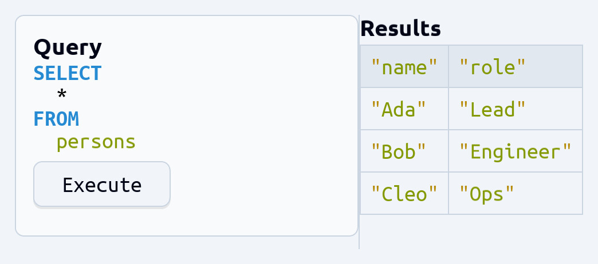
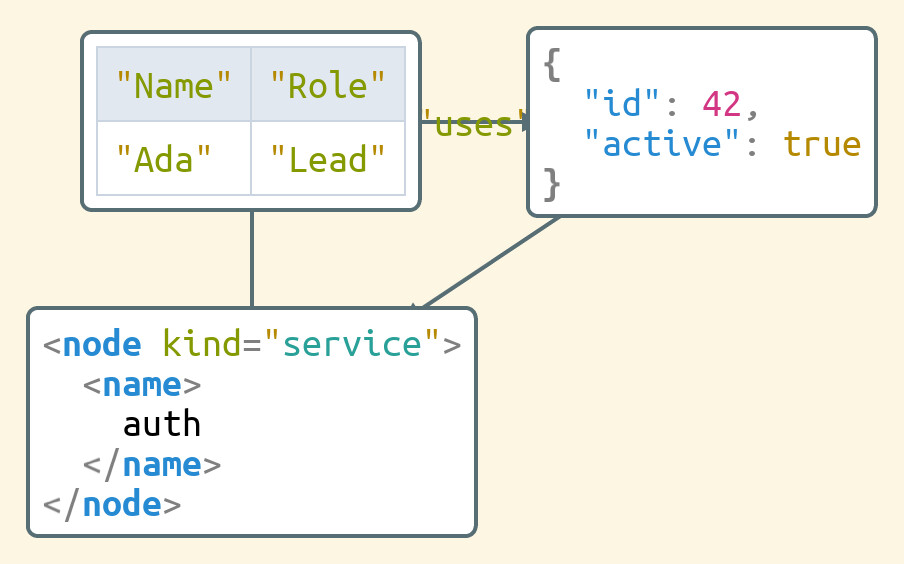
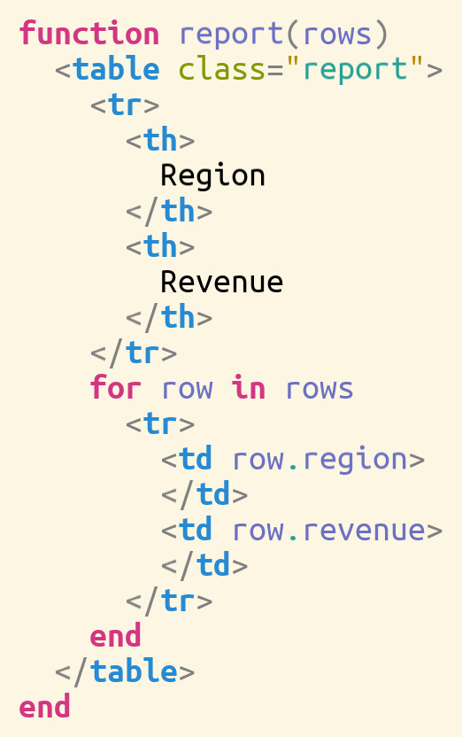

One structure, many editable views — with an AI assistant.
ProjecturEd is an application to view and edit structured data: JSON, XML, Markdown, SQL,
Julia code, math, charts and more. Most views take your edits, and an edit in a view changes
the data, not a text copy of it. An AI assistant edits the same data with the same operations
as you. It is written in Julia, so it is also a generic user interface for your own programs.
seven requests to a local model — a queue study, sixteen OMNeT++ runs, two charts, and the answer: a buffer of 13
The idea
The data is the source. A view is computed from it.
A text editor stores your work as a string of characters, and the structure is implicit. ProjecturEd stores the structure: a tree of typed Julia values. What is on the screen is a projection of that data, one of many possible notations, computed from it.
A projection is a pair of functions. The printer makes the view, and records which part of the view came from which part of the data. The reader uses that record to turn an edit in the view into an operation on the data. So a view can be a block of JSON, an outline, a table, a diagram or formatted prose, and each one takes edits.
A text editor
A text editor
The data is a string. A parser recovers the structure each time, and there is one notation.
ProjecturEd
ProjecturEd
The data is a tree, a table or a graph. Each notation is a projection of it. One piece of data can have several views, and an edit in one shows in the others.
You, ProjecturEd and the AI assistant each run a loop of their own: read, evaluate,
print. The loops meet at synchronization points. You and the editor meet at the screen, the
keyboard and the mouse. The editor and the assistant meet at tool calls and their results. The
dashed arc is the conversation: you ask the assistant in plain words, and it answers. The
conversation is a document in the editor too, so these words also pass through the editor.

Julia forms that draw a picture
In the evaluator, each form is Julia. A form that returns a canvas draws it in a pane beside
the evaluator, and each later form adds a part: a ring, a dot that circles the ring, a sine and
a cosine trace, and the links from the dot. A part that moves reads the clock, so the picture
moves while you type.
JSON, YAML, XML, Markdown, reStructuredText, SQL, Julia and a math notation open, change and save through their own parsers.
Design a tool window without a GUI toolkit
Widgets, tables, cards, tabs and split panes make a complete window. The window of ProjecturEd itself is made this way.
Look into a running Julia program
A reflection view shows any object as a tree that opens one level at a time.
Show results
Line, bar, histogram, scatter and strip charts, and sequence charts, are documents. You can select a data point like any other part.
Model behaviour and run it
A state machine produces Julia code that runs. A process flowchart runs with breakpoints and a live trace.
Ask for a change in plain words
The assistant searches the API, writes Julia and runs it in the editor. It works with a local model through Ollama, or with Claude.
Compared
Beside a fixed interface, and beside an assistant that edits text.
Ordinary software
One fixed interface
An application has one way to show its data: a grid, a form, a page. To see the data another way, you copy it into another tool.
ProjecturEd
The interface is a projection
The views are projections of one model: a grid, an outline, a form, a diagram. You choose one or write a new one, and the data is not copied.
Today's AI assistants
An assistant that edits text
The model writes characters, and a parser reads them back. A change that does not parse is found after the fact.
ProjecturEd
An assistant that edits data
The model changes the data with the same typed operations as your key presses: insert an element, replace a value, move the selection. The same tests cover both.
Capabilities
What it does.
The assistant works on the same data as you. The other three multiply: each kind of data goes
through each chain of projections to each backend.
An assistant on the same data
A language model reads the document and the API of the loaded packages, and changes the data with operations, not with line numbers. It runs with a local model through Ollama, or with Claude.
One document, many kinds of data
A document of one domain can hold a document of another: a formula in a table cell, JSON inside prose. Navigation and editing cross the boundary, and any part is a document of its own.
Composable projections
Projections chain, nest, sort, filter and focus. A sorted or filtered view still takes edits, because each step maps an edit back through the step below it.
A window, a terminal or a browser
The same views run in a native window, in a terminal and in a browser, and with no screen for tests. A view also goes to a vector PDF, a PNG or an MP4. It runs from source, or as a built binary that needs no Julia.
More capabilities
An edit keeps the data well formed
An edit is a typed change of the data, so the data stays well formed. Type-in of single characters works in most domains, and not yet the same way in all of them.
Only what you look at is computed
Parts of a document that are not on the screen cost nothing, so a view can show a part of a very large document, or of a list with no end. Each field of the data is a reactive cell, and a change computes again only the parts of the views that depend on it. See the video.
Playback & recording
A list of gestures drives a session from a script. The result goes to a screenshot or to a recorded video.
Tests for every example
The test suite walks every example: the printer output, the reader, and the navigation to each position. A static guard checks the layering of each package.
A selection is a path
The selection is a path into the data: a position between two characters, an XML attribute, a function argument, a table column, a whole chapter. It survives a filter, a sort and a change elsewhere in the document.
Paste the same object, or a copy
Ctrl+N notes a part without a change of the document. A paste then puts the same object in a second place, so an edit in one place shows in both. Ctrl+Shift+V pastes a copy instead.
Your own domain
A domain is a package of its own: document types, projections, operations and key bindings. No other domain depends on it, and the general features work on it: navigation, search, the clipboard, filtering, files, every backend and the assistant.
Every command, and whether it runs here
Ctrl+Shift+P opens a command palette. It lists the commands at the current selection and marks each command that can not run now. Type part of a name, and Enter runs the command. F1 shows the same list with the keys. Both lists come from the projections in use.
AI integration
The assistant works on the same data as you.
The tools a model can call are a layer of the editor itself: it reads the data you are looking at, searches the API of the loaded packages, writes Julia and runs it, and changes the data with the same typed edits your key presses make. So Ctrl+Z takes back a change by the assistant like one of yours. It runs with a local model through Ollama or with Claude, and an external client gets the same tools over MCP.
Views on demand
The assistant opens views
The assistant can open a tab, arrange the panes, and build a card, a table or a form to show a result. So a window is put together for the task at hand, by you or by the assistant, from the same parts.
It reads the API at run time
The tools search the modules, types and functions of the loaded packages by name, by pattern or by description, and read their documentation and the guides. The model finds a function before it calls it.
One tool: running code
The main tool runs Julia code in the process of the editor, with the editor bound to a variable. There is no fixed list of commands. It is not a sandbox: it is a tool for your own machine.
It changes data and views
The assistant edits the data and the projections that show it: it can add a sorted or filtered view, swap a notation, or restructure a document.
A reply can hold a table, a formula or code
The conversation is a document. A turn can hold a table, a formula, a diagram or code, made by the assistant or put there by you.
Ask, then edit
You can ask for a change in plain words, and then edit the result by hand in the same view.
Videos
Short sessions, recorded by the editor itself.
The keys of each video come from a script and play at the speed of a person typing. The editor
draws each frame, and nothing is cut or sped up.
The assistant edits a file
A person asks the assistant to add Frank, 30, from Paris to people.json. The
assistant is a local model that Ollama runs on the same computer. It writes Julia and runs it
in the window: it reads the file, makes the new record, and inserts it with an edit, as a key
press does. The edit goes into the history of the file, so a click in the file and
Ctrl+Z take Frank back. The person then asks for a table of the people, sorted by
name, beside the file. The assistant reads the file again, finds five people, and opens the
table in a new pane.
The pane at the bottom is the gesture log of the window: each key of the person, and each
operation, also the one that the assistant made. The model is not scripted, and its answers are
its own. The video waits a few seconds before each call of the model, so the code can be read
before its result opens.
two requests, an undo and four runs of Julia in 137 seconds
JSON from nothing
An empty document becomes a JSON object, typed with the keyboard alone. A key makes a typed
element, not a character: { makes an object, Tab goes from a key to
its value, " makes a string and , adds the next entry. ↓
leaves a nested object or array. The panel at the bottom right is the gesture log of the editor:
each key, and the operation it made on the data.
115 keys in 32 seconds, from an empty document
To open the same editor from a Julia session with the ProjecturEd packages:
julia> using Projectured, ProjecturedExample, ProjecturedSdl
# an empty JSON document, drawn as JSON → syntax → text → graphics
julia> run_example(JsonNothing(selection = @reference), ChainingProjection(
RecursiveProjection(JsonToSyntax()),
RecursiveProjection(SyntaxToText()),
TextToGraphics(measure = measure_sdl_text)))
The window opens with the empty document selected. Press { to start.
The whole JSON domain is two short files:
JsonDocument.jl
says what a JSON document is and what each key does to it, and
JsonToSyntax.jl
says how it looks. They hold about 120 and 140 lines.
The rotating vector, form by form
The evaluator runs Julia in the program. A canvas that a form returns draws as itself, and
it gets a pane of its own beside the evaluator. Each later form adds one part to it: a ring,
a dot that circles the ring, a sine and a cosine trace, the links from the dot, and the axes.
A part that moves takes a function where it moves, so it follows the clock, and the picture
changes in its pane while the forms are typed.
13 forms in under 2 minutes, from an empty evaluator
A tool window from widgets
The evaluator builds a small tool from widgets. The first forms make a cell, a button that
counts its presses in the cell, and a column that holds the button. An Alt+click selects the
button in its result row, Alt+Up selects the column around it, and a split and a paste give
the tool a pane of its own. Each later form adds widgets to the tool: a label that counts the
presses, a slider and a label that reads it, a text field, and a table of the three values. A
label or a table cell that takes a function follows what the function reads, so each widget
changes at once when the button is pressed or the slider is dragged.
The presses and the drags are mouse events from the same script as the keys, and the video
draws the pointer.
10 forms, 4 presses and 2 drags in 75 seconds
The window is a document too
In the evaluator, editor is the window of the program. The forms walk down its
fields: the screen holds the windows, a window holds a shell, and the shell holds the menu bar,
the toolbar and the status bar. The toolbar that a form returns draws as itself in its result
row. It is the same object as the toolbar of the window. A press on the copy opens the gesture
log, and the log lists that press as its newest gesture. A form that adds a button changes the
toolbar and its copy at once.
A search of the window finds the file explorer, and a double-click in its copy opens a JSON
file in a new tab. A drag puts the tab beside the evaluator, and a second search finds the
document of the tab. An edit in the tab shows in the result row, an edit in the result row
shows in the tab, and Ctrl+Z takes both back: the two views show one
document.
10 forms, a double-click, a drag and two edits in 137 seconds
A form that ends with ; hides its value, as in the Julia REPL, so the form
that adds the button shows no result.
Only what you look at is computed
A list can have no end. One form in the evaluator defines all the primes, with the classic
lazy sieve of Eratosthenes, and a pane shows the list. The label above the list counts the
links of the list that exist: the rows that the pane has shown, and one more at each edge.
When the wheel scrolls down, the count grows. When it scrolls back, the count stays the same,
because each link is computed once.
A filter of the list, the primes that end in 7, is a lazy list too. While it scrolls, the
count of the primes grows with it, because the filter asks the sieve for a prime only when it
needs one. The primes around one trillion start in the middle. Each one is found by a test of
that number alone, so the list reaches up and down from one trillion, and it computes only the
rows on the screen.
7 forms and the wheel over three lists that have no end, in 92 seconds
Only what changes is painted again
The window paints again only the parts of the screen that changed, and a red outline shows
them. When the pointer moves over the toolbar or over the navigator, only the button or the
row that it leaves and the one that it enters are painted again. When a folder opens or
closes, its chevron and the rows below it are painted again, and the rows above it are not.
When the navigator scrolls, every row moves, so all of the navigator is painted again, but the
page beside it is not. A move of the caret by a line or by a word paints its old and its new
place, and a typed key paints only its own paragraph, and the paragraph below it when it grows
by a line.
The editor finds this without a comparison of pixels. Every value on the screen is a reactive
cell, and an event writes only a few cells. Before each frame, the backend compares the tree of
graphics with the last paint, and finds each graphic that draws something else, that moved, or
that came into the view or left it. Each change adds its old and its new rectangle to a set,
and the backend paints each rectangle under its own clip. A container does not read the size
of its children, so a change in one part of the window does not move the other parts. In the
video each outline stays for 0.6 seconds, so that a repaint of a single frame can be seen.
The pointer, the wheel and the keyboard over a Markdown file, in 59 seconds
To see the same outline in the program, open a Markdown file with the two switches on:
You need Julia 1.11 or later. A native window also needs SDL2 and SDL_ttf. The packages are not in
the General registry, so clone the repository.
git clone https://github.com/projectured/projectured-julia
cd projectured-julia
bin/projectured
The window opens with a file navigator on the left, the open files in tabs in the middle, and the
assistant on the right. To open files at once, name them on the command line:
bin/projectured notes.md data.json. The first start compiles the code, which takes some
minutes. Later starts are fast.
bin/projectured --help # every option
bin/projectured --backend=web a.json # in a browser, at http://127.0.0.1:8080
bin/projectured --assistant=anthropic # with Claude: set ANTHROPIC_API_KEY first
By default the assistant uses a local model through Ollama:
the Ollama server must run on your computer, and the model must be pulled.
bin/build_projectured compiles the application into a binary that runs without Julia.
The quick start of the README
has the details.
Build with ProjecturEd
Examples, with the code that makes them.
From here on, the page is for a developer. Each example is a document or a projection drawn by
the editor, and the Julia code beside it is what makes it. The catalog below lists the domains and
the projections that you can combine.
A rotating vector
Each coordinate is a cell that reads the clock of the editor, so the scene is drawn again every frame.
# each animated value is a cell that reads the editor's clock,# so the scene re-renders every frame
dot = GraphicsCircle(
() -> cx + r*cos(angle(get_reactive_time(clock))),
() -> cy - r*sin(angle(get_reactive_time(clock))),
7, color_solarized_magenta)
GraphicsCanvas([background, ring, sin_chart, cos_chart, dot]; w, h)

A table with formulas
A cell can hold a formula that is computed again when you edit. A table domain and a math domain, composed.
# a table widget whose cells can be live math, not just values
WidgetTable(Point2D(40, 40),
[PrimitiveString("A"), PrimitiveString("B"), PrimitiveString("C")],
[PrimitiveString("1"), PrimitiveString("2"), PrimitiveString("3")],
[[PrimitiveNumber(10), PrimitiveNumber(20), PrimitiveNumber(30)],
# formulas, re-evaluated as you edit:
[MathBinaryOperation(:+, MathVariable("A"), MathVariable("B")),
MathBinaryOperation(:*, PrimitiveNumber(2), MathVariable("B")),
MathBinaryOperation(:-, MathVariable("C"), PrimitiveNumber(5))]])

Sort without touching the data
A sorted view is one more projection in the chain. Remove it, and the original order is back: the data was not changed.
# a sorted view is just one more projection in the pipeline —# the underlying list is never reordered
ChainingProjection(
SortingProjection(by = x -> x.value),
# … then render the collection as text …
)

Any object, as a form
The reflection projection shows a plain struct as a form with text fields and checkboxes, with no user interface code.
# reflected into a form: the String becomes a text field,# each Bool a checkbox — no interface code written
@document struct SearchSettings
query::String
case_insensitive::Bool
whole_word::Bool
end

A query tool from widgets and SQL
Widgets and SQL in one document: the query and a button on the left, the result table on the right. A split pane, a card, a button, a table and an SQL statement, composed.
# a query tool from widgets + SQL — one document, both domains
WidgetSplitPane(:horizontal, [
WidgetCard(title = "Query", content = CellVector([
SqlSelectStatement("persons"), # SELECT * FROM persons
WidgetButton(Point2D(0,0), Point2D(120,40), "Execute")])),
WidgetTitlePane("Results",
WidgetTable(["name", "role"], [],
[["Ada", "Lead"], ["Bob", "Engineer"], ["Cleo", "Ops"]]))])

A graph with automatic layout
You give the vertices and the edges; the layout engine places the nodes and routes the connections. Each node here is a document of another domain: a table, JSON, an XML element.
# nodes are whole documents — a table, some JSON, an XML element;# describe vertices and edges, the layout & routing are automatic
v_table = GraphVertex(table) # table :: WidgetTable
v_json = GraphVertex(json) # json :: JsonObject
v_xml = GraphVertex(xml) # xml :: XmlElement
GraphGraph(
[v_table, v_json, v_xml],
[GraphEdge(v_table, v_json; directed=true, label="uses"),
GraphEdge(v_json, v_xml; directed=true),
GraphEdge(v_table, v_xml; directed=false)])

One function, three domains
A Julia function whose body is an XML table, and the rows are a Julia loop. One document nests Julia, XML and Julia again, and each level takes edits in place.
# Julia and XML document constructors, combined into one tree# (the editor renders it as the syntax shown alongside)
JuliaFunction(JuliaIdentifier("report"), [JuliaIdentifier("rows")],
JuliaBlock([
XmlElement("table", [XmlAttribute("class", "report")], [
XmlElement("tr", [XmlElement("th", [XmlText("Region")]),
XmlElement("th", [XmlText("Revenue")])]),
JuliaFor([JuliaForIterator(JuliaIdentifier("row"),
JuliaIdentifier("rows"))],
JuliaBlock([
XmlElement("tr", [
XmlElement("td", [JuliaFieldAccess(JuliaIdentifier("row"),
JuliaIdentifier("region"))]),
XmlElement("td", [JuliaFieldAccess(JuliaIdentifier("row"),
JuliaIdentifier("revenue"))])])]))])]))
Catalog
Domains and projections.
A document belongs to a domain, and a projection turns it into a notation. Both sets are open, and projections compose.
Domains
JSONXMLYAMLSQLJulia code, as a syntax treeGeneric syntax shared by JSON, XML, SQL & codeMath and formulasMarkdown and reStructuredTextStyled textTablesGraphs with automatic layoutCharts and sequence chartsState machines and processesGraphicsIconsImagesStyles · fonts & colorsWidgetsLayouts, also by constraintsThe file systemVersion history and undoAI conversationPanes, tabs and toolsany object · reflected… and combinations of them
Transform any view
Sorting a sequenceFiltering a sequenceSearching by a predicateReversing a sequenceFocusing to a smaller part
Compose & operate
Chaining into pipelinesDispatching by where it isRecursion into partsClipboard
Each projection builds on the ones below it, and reuses their layout and their readers. So a sorted, filtered or searched view still takes edits.
Status & lineage
Under development, and the successor of a Common Lisp editor.
Status: under development. Most features work, but ProjecturEd is not a
finished product. Some parts are incomplete, and names and interfaces can still change. The
roadmap
lists what works today and what comes next. Problem reports and questions are welcome as
GitHub issues.
Non-commercial use is free, and it includes changes to the code. Commercial use needs a
licence from the author.
ProjecturEd began as an editor written in Common Lisp, and its source is public. The Julia
version is a new implementation of the same idea, with more domains, more backends and an AI
assistant.
It is more than a hundred thousand lines of Julia, written through AI-assisted development with an automatic test suite. None of them was typed by hand.